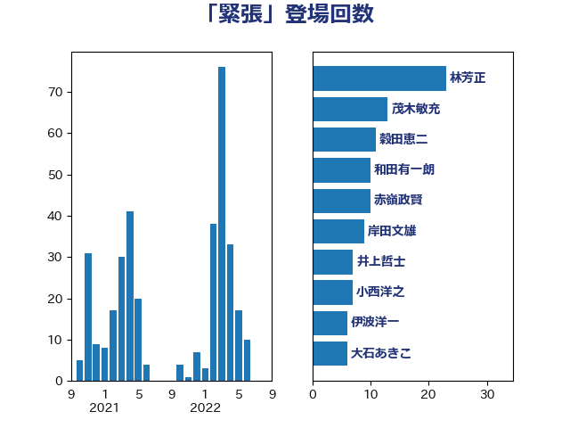

単語「緊張」

| 林芳正 | 自由民主党 | 23 回 |
| 茂木敏充 | 自由民主党 | 13 回 |
| 穀田恵二 | 日本共産党 | 11 回 |
| 和田有一朗 | 日本維新の会 | 10 回 |
| 赤嶺政賢 | 日本共産党 | 10 回 |
| 岸田文雄 | 自由民主党 | 9 回 |
| 井上哲士 | 日本共産党 | 7 回 |
| 小西洋之 | 立憲民主党 | 7 回 |
| 伊波洋一 | 無所属 | 6 回 |
| 大石あきこ | れいわ新選組 | 6 回 |
| 荒井優 | 立憲民主党 | 6 回 |
| 岸信夫 | 自由民主党 | 5 回 |
| 杉本和巳 | 日本維新の会 | 5 回 |
| 梶山弘志 | 自由民主党 | 5 回 |
| 田村智子 | 日本共産党 | 5 回 |
| 石原正敬 | 自由民主党 | 5 回 |
| 山添拓 | 日本共産党 | 4 回 |
| 笠井亮 | 日本共産党 | 4 回 |
| 菅義偉 | 自由民主党 | 4 回 |
| 三宅伸吾 | 自由民主党 | 3 回 |
| 倉林明子 | 日本共産党 | 3 回 |
| 小山展弘 | 立憲民主党 | 3 回 |
| 打越さく良 | 立憲民主党 | 3 回 |
| 杉田水脈 | 自由民主党 | 3 回 |
| 阿部知子 | 立憲民主党 | 3 回 |
| 高橋千鶴子 | 日本共産党 | 3 回 |
| 上田清司 | 国民民主党 | 2 回 |
| 伊藤俊輔 | 立憲民主党 | 2 回 |
| 住吉寛紀 | 日本維新の会 | 2 回 |
| 佐藤英道 | 公明党 | 2 回 |
| 吉田はるみ | 立憲民主党 | 2 回 |
| 大塚耕平 | 国民民主党 | 2 回 |
| 大野敬太郎 | 自由民主党 | 2 回 |
| 小沼巧 | 立憲民主党 | 2 回 |
| 岡田克也 | 立憲民主党 | 2 回 |
| 岬麻紀 | 日本維新の会 | 2 回 |
| 有村治子 | 自由民主党 | 2 回 |
| 本村伸子 | 日本共産党 | 2 回 |
| 橋本岳 | 自由民主党 | 2 回 |
| 渡辺周 | 立憲民主党 | 2 回 |
| 篠原豪 | 立憲民主党 | 2 回 |
| 葉梨康弘 | 自由民主党 | 2 回 |
| 西村康稔 | 自由民主党 | 2 回 |
| 西村智奈美 | 立憲民主党 | 2 回 |
| 赤木正幸 | 日本維新の会 | 2 回 |
| 赤羽一嘉 | 公明党 | 2 回 |
| 金子恭之 | 自由民主党 | 2 回 |
| 金村龍那 | 日本維新の会 | 2 回 |
| 馬場伸幸 | 日本維新の会 | 2 回 |
| 中島克仁 | 立憲民主党 | 1 回 |
| 丸川珠代 | 自由民主党 | 1 回 |
| 二階俊博 | 自由民主党 | 1 回 |
| 伊藤孝恵 | 国民民主党 | 1 回 |
| 佐々木さやか | 公明党 | 1 回 |
| 北側一雄 | 公明党 | 1 回 |
| 吉田久美子 | 公明党 | 1 回 |
| 吉良よし子 | 日本共産党 | 1 回 |
| 吉良州司 | 無所属 | 1 回 |
| 國場幸之助 | 自由民主党 | 1 回 |
| 城内実 | 自由民主党 | 1 回 |
| 堀場幸子 | 日本維新の会 | 1 回 |
| 大野泰正 | 自由民主党 | 1 回 |
| 宮本徹 | 日本共産党 | 1 回 |
| 宮沢洋一 | 自由民主党 | 1 回 |
| 寺田学 | 立憲民主党 | 1 回 |
| 小池晃 | 日本共産党 | 1 回 |
| 小熊慎司 | 立憲民主党 | 1 回 |
| 山下芳生 | 日本共産党 | 1 回 |
| 山井和則 | 立憲民主党 | 1 回 |
| 山口俊一 | 自由民主党 | 1 回 |
| 山口晋 | 自由民主党 | 1 回 |
| 山岸一生 | 立憲民主党 | 1 回 |
| 山崎誠 | 立憲民主党 | 1 回 |
| 山田美樹 | 自由民主党 | 1 回 |
| 川合孝典 | 国民民主党 | 1 回 |
| 川崎ひでと | 自由民主党 | 1 回 |
| 川田龍平 | 立憲民主党 | 1 回 |
| 工藤彰三 | 自由民主党 | 1 回 |
| 庄子賢一 | 公明党 | 1 回 |
| 斎藤アレックス | 国民民主党 | 1 回 |
| 斎藤洋明 | 自由民主党 | 1 回 |
| 新垣邦男 | 立憲民主党 | 1 回 |
| 木村英子 | れいわ新選組 | 1 回 |
| 末松信介 | 自由民主党 | 1 回 |
| 本田顕子 | 自由民主党 | 1 回 |
| 杉久武 | 公明党 | 1 回 |
| 松原仁 | 立憲民主党 | 1 回 |
| 枝野幸男 | 立憲民主党 | 1 回 |
| 柳ヶ瀬裕文 | 日本維新の会 | 1 回 |
| 梅村みずほ | 日本維新の会 | 1 回 |
| 森英介 | 自由民主党 | 1 回 |
| 榛葉賀津也 | 国民民主党 | 1 回 |
| 沢田良 | 日本維新の会 | 1 回 |
| 泉健太 | 立憲民主党 | 1 回 |
| 浅野哲 | 国民民主党 | 1 回 |
| 浦野靖人 | 日本維新の会 | 1 回 |
| 渡辺孝一 | 自由民主党 | 1 回 |
| 牧原秀樹 | 自由民主党 | 1 回 |
| 牧島かれん | 自由民主党 | 1 回 |
| 猪口邦子 | 自由民主党 | 1 回 |
| 玄葉光一郎 | 立憲民主党 | 1 回 |
| 甘利明 | 自由民主党 | 1 回 |
| 田村憲久 | 自由民主党 | 1 回 |
| 石井啓一 | 公明党 | 1 回 |
| 石川博崇 | 公明党 | 1 回 |
| 石川香織 | 立憲民主党 | 1 回 |
| 石橋林太郎 | 自由民主党 | 1 回 |
| 石田昌宏 | 自由民主党 | 1 回 |
| 磯崎仁彦 | 自由民主党 | 1 回 |
| 福山哲郎 | 立憲民主党 | 1 回 |
| 福岡資麿 | 自由民主党 | 1 回 |
| 福島伸享 | 無所属 | 1 回 |
| 福重隆浩 | 公明党 | 1 回 |
| 秋葉賢也 | 自由民主党 | 1 回 |
| 美延映夫 | 日本維新の会 | 1 回 |
| 藤巻健太 | 日本維新の会 | 1 回 |
| 西銘恒三郎 | 自由民主党 | 1 回 |
| 谷川とむ | 自由民主党 | 1 回 |
| 道下大樹 | 立憲民主党 | 1 回 |
| 重徳和彦 | 立憲民主党 | 1 回 |
| 鈴木俊一 | 自由民主党 | 1 回 |
| 鈴木敦 | 国民民主党 | 1 回 |
| 長妻昭 | 立憲民主党 | 1 回 |
| 阿部司 | 日本維新の会 | 1 回 |
| 青山大人 | 立憲民主党 | 1 回 |
| 音喜多駿 | 日本維新の会 | 1 回 |
| 高市早苗 | 自由民主党 | 1 回 |
| 高木かおり | 日本維新の会 | 1 回 |
| 鬼木誠 | 立憲民主党 | 1 回 |
| 齋藤健 | 自由民主党 | 1 回 |